Video Odaklı & Saha Kayıtları
Sistemi Çalışırken Görün
Fenix Yangın kurumsal tanıtım filmi, TRT Haber yangın güvenliği özel yayını ve gazlı söndürme mühendisliği video arşivi.
Fenix Sistem Yangın Söndürme ve Mühendislik
Davlumbaz İçi Söndürme Sistemi
Resmi Kanal
Tüm Saha Testlerimizi YouTube Üzerinden İzleyin
Saha uygulamaları, door fan testleri, gaz dolum istasyonu süreçleri ve daha fazlası kanalımızda.
Projelerimizden Kareler
Galeri
Yangın güvenliği çözümlerimizden, saha uygulamalarımızdan ve tamamladığımız projelerden gerçek uygulama görüntüleri.
Güvenli
yarınlar için
çalışıyoruz.
FM200 Söndürme Sistemi
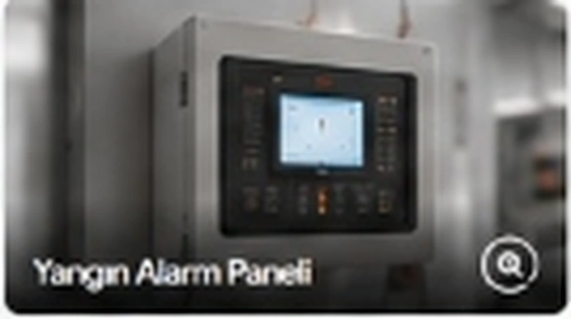
Novec 1230 Gazlı Söndürme
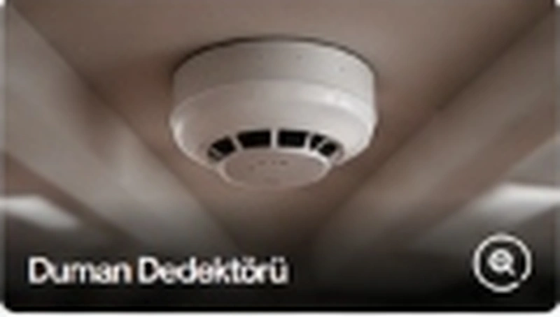
CO2 (Karbondioksitli) Yangın Söndürme Sistemi
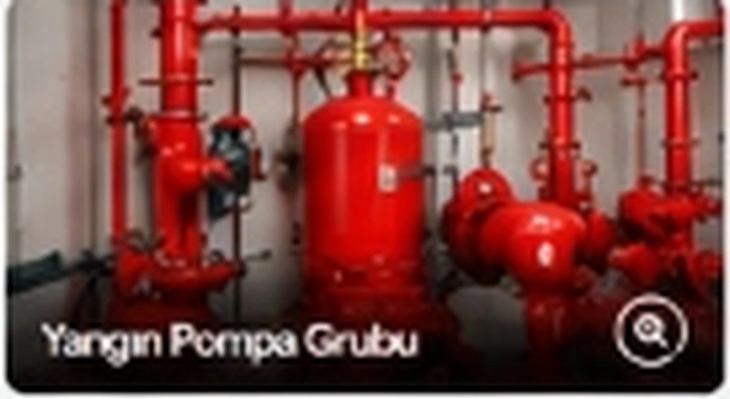
FM200 Söndürme Sistemi
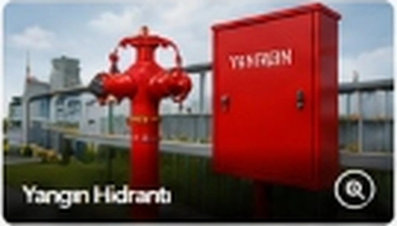
Köpüklü Söndürme Sistemi
Novec 1230 Söndürme Sistemi
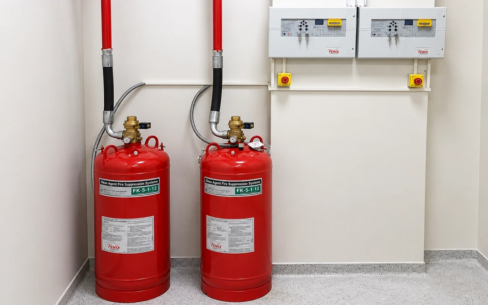
FM200 Söndürme Sistemi
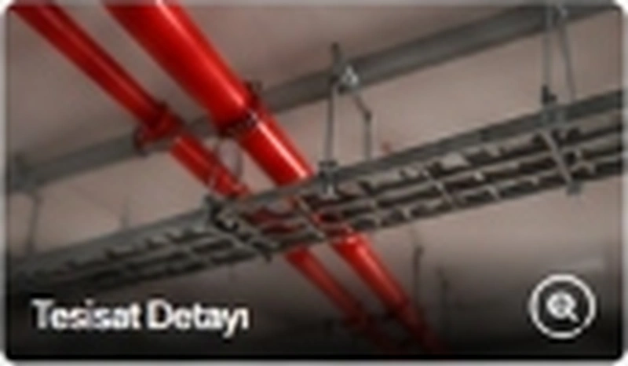
Gazlı Söndürme Sistemi
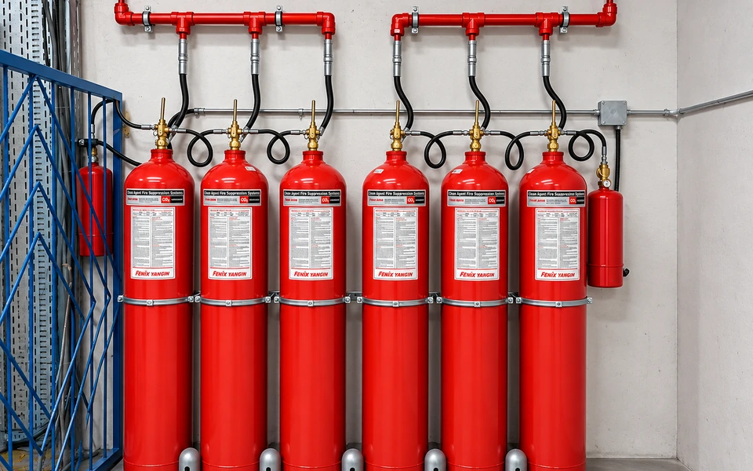
CO2 (Karbondioksitli) Yangın Söndürme Sistemi
Mutfak Davlumbazı Söndürme Sistemi
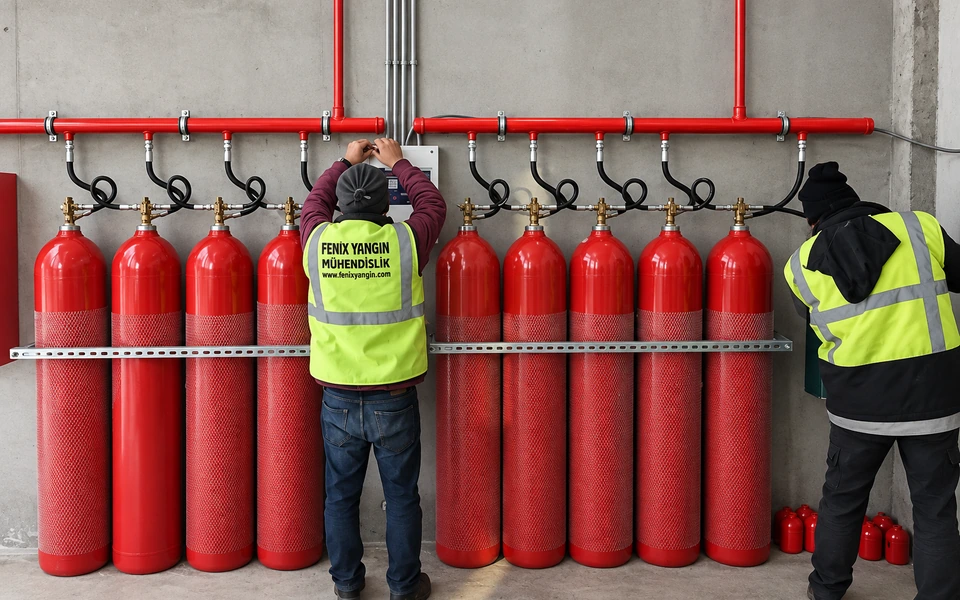
CO2 (Karbondioksitli) Yangın Söndürme Sistemi
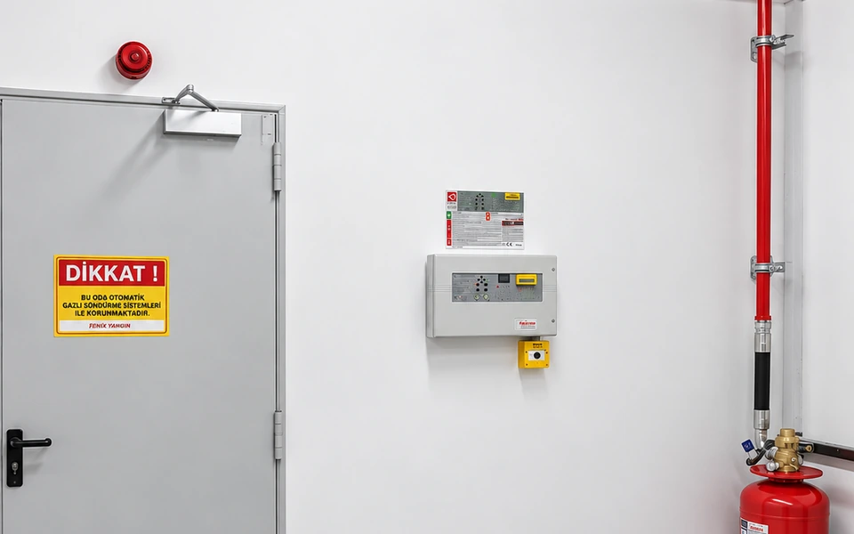
Proje Uygulaması
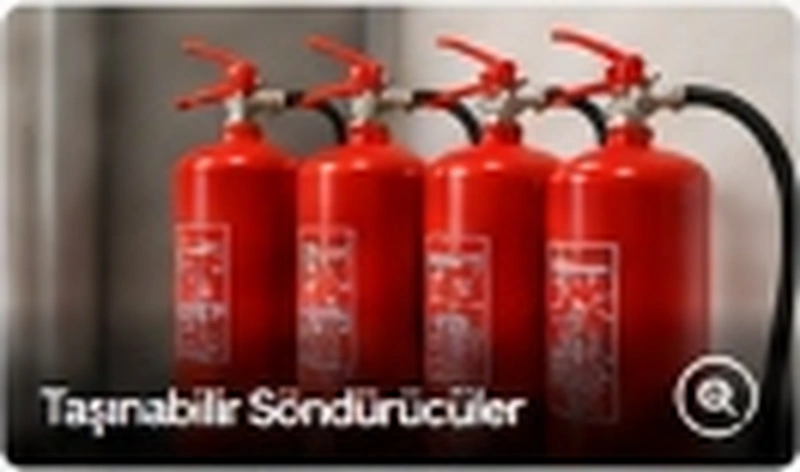
Pano Söndürme Sistemi
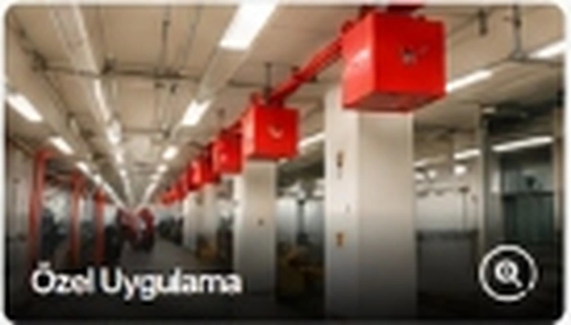
Aerosol Söndürme Sistemi
Jeneratör Odası Söndürme
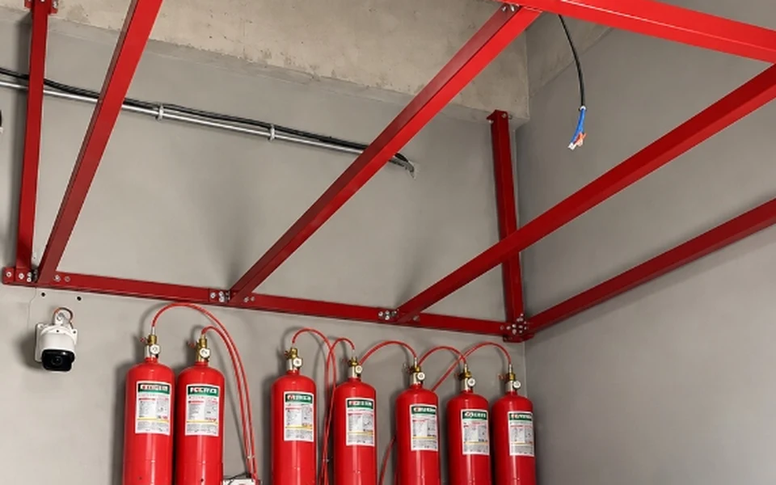
Pano Odası Gazlı Söndürme
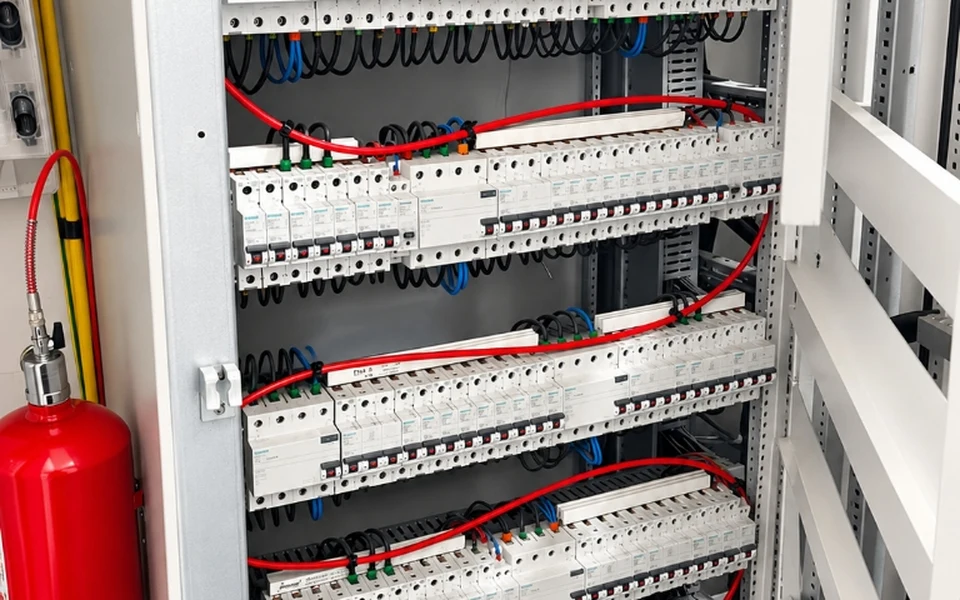
Pano İçi Mikro Söndürme
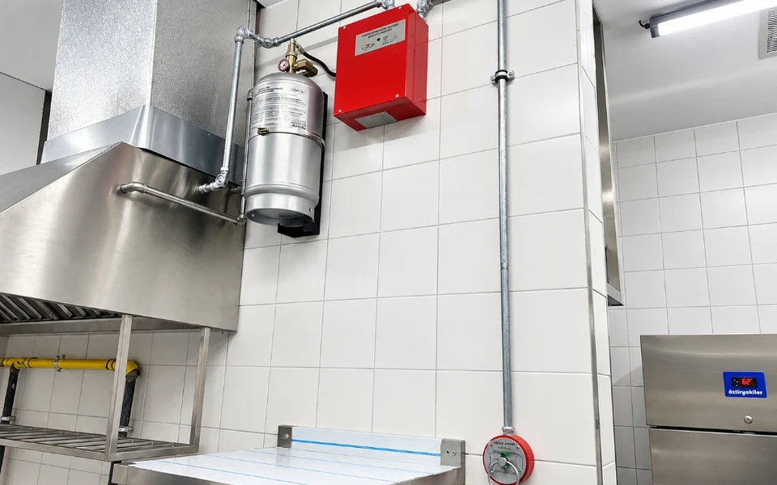
Davlumbaz Söndürme Ünitesi
Pano İçi Aerosol Söndürme Sistemi
Projeler için teknik sunum ve teklif talep edin
Mühendislerimiz, mekanınıza özel en uygun yangın güvenliği sistemi için sizinle iletişime geçsin, detaylı teknik bilgi ve teklif sunalım.